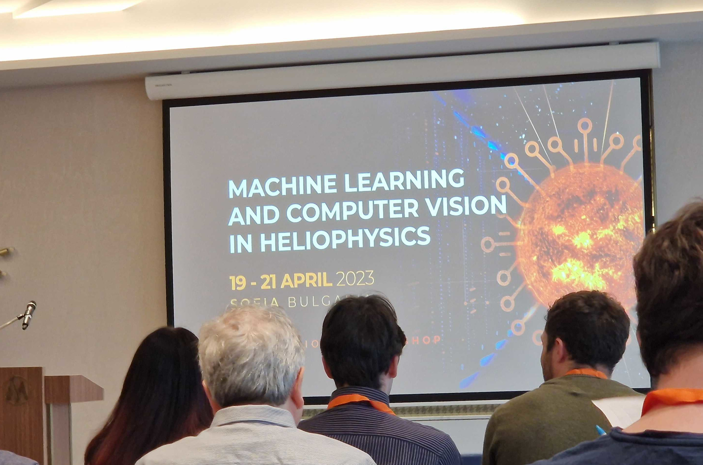
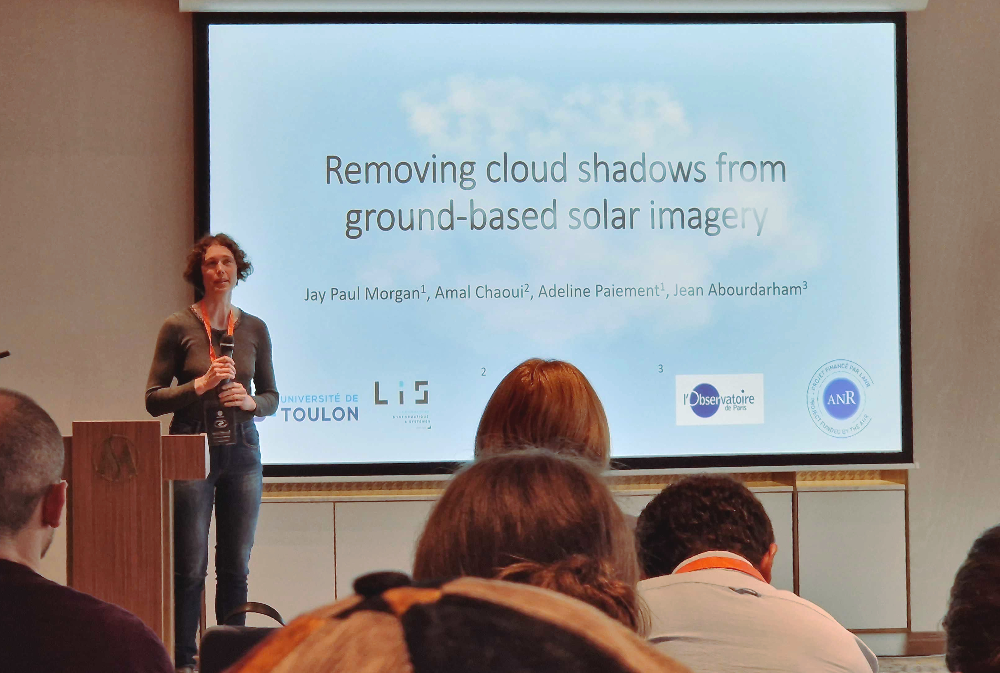
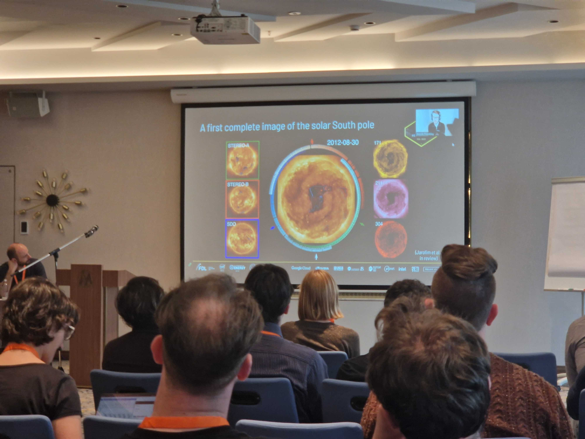

![]()
The 2023 Machine Learning and Computer Vision in Heliophysics conference, hosted in the luxurious Millennium hotel, Sofia, Bulgaria, has now concluded after 3 days of interesting and thought-provoking lectures.
Following this conference, I wanted to highlight some of the talks, as well as drawing and picking up common threads that were interwoven through all the presentations. From this, I hope to better understand what the current research is, more than one would gain for looking at each work in its isolation.

For a full list of the conference program, you can find it here.
If you were at this conference and you think that I’ve missed something that should be covered in this discussion, please do get in touch and let me know!
Simple models are useful models
Much of the work showed thoughtful feature extraction, coupled with domain knowledge, and selection of traditional machine learning models can still produce reliable models upon which to make predictions. Take, for example, Hanne Baeke’s talk where active regions are classified using the magnetic properties. A small number of features were selected by evaluating the usefulness and duplication of information present in all the features. After a sparse autoencoder was used to encode a slightly larger representation, that was classified using a \(k\) -NN model in a supervised way, and \(k\) -means in a unsupervised way.
But while, we have seen such use of traditional machine learning, Deep Neural Networks (DNNs) also make their appearance. I noticed a use of common models through applications. In particular, we saw many applications using either U-Net or YOLO.
Andrea Diercke created a labelled (the labels being bounding-boxes) dataset of filaments in the H-α wavelength. These labels were used to train a YOLO model to recognise the presence of filaments so other, more computationally expensive algorithms but potentially more accurate, could be used to create segmentation masks on smaller regions of the images.
More data is better data
Heliophyics is no exception in the world where more data is needed to adequately train ML models. Despite many satellites, telescopes, and other sensoring equipment constantly gathering data, a very large percentage of the data being recorded contains nothing interesting. For example, take Alin Razvan Paraschiv’s talk in which they would like to classify whether, based on a small number of features, a cosmic mass ejection (CME) will interact with the Earth (geoeffective). In this talk, 99.3% of all data is non-geoeffective. Class-imbalance is then a persistent problem. The disruptive events we want to detect and predict happen very rarely. In Vanessa Mercea’s talk on the detection of sunquakes, these type of events only happen around 2 times per year. Given then length of time since they’ve been discovered, we haven’t observed a whole lot of them.
To combat the issue of small samples of positive data, the Synthetic Minority Oversampling Technique (SMOTE) algorithm was very often used to generate synthetic examples.
Other cases used a DNN to generate data. Take, for example, Francesco Pio Ramunno demonstrating a very interesting method of generating solar disk images that contain desired solar features using a Diffusion Probabilistic Model (DDPM). Others like Juan Esteban Agudelo Ortiz used a GAN architecture to generate stokes parameters.
As the events we’re interested in happen very infrequently, but we’re recording all of the time, we are essentially wasting our storage with useless data. Pearse Murphy used a U-Net trained to segment type-II and type-III solar bursts so that data could be automatically binned and we reduce the storage costs by restricting the saving data closer to solar events.

Instead of generating data, DNNs were used to clean existing data. For example Jeremiah Scully ’s work in cleaning of radio frequency interference using GANs. Or, Adeline Paiement presenting our work on the cleaning of cloud contaminants from H-α and Ca-II imaging. We used a U-Net model in a C-GAN architecture to learn the cloud transmittance. The transmittance values could then be added to the solar disk, resulting in a cleaned image. You can find out poster at on my github.
Other talks
Not all of the talks fit into my classification here. But I wanted to highlight some other interesting talks that do not follow the trend placed above, though this in itself is not an exhaustive list.
 presenting his work on the characterisation on the oscillisation of filaments.")
First we have Manuel Luna’s work of detecting the oscillation of filament structures and its characterisation over a 6-month period. Secondlly, we have Benoit’s talk of creating a 3d-simulation of the sun by predicting the image of the solar disk from angles where there are no satellites. Other works include Connor O’Brien’s lecture on the probabilisitc determination of solar wind propagation using an RNN model.

Citation
@online{morgan2023,
author = {Morgan, Jay Paul},
title = {MCH2023 - {A} Retrospective},
date = {2023-04-21},
url = {https://morganwastaken.com/blog/2023-04-21-mch23},
langid = {en}
}